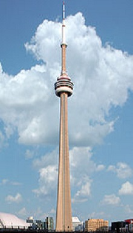

CN Tower, Торонто, Канада
553,3-метровая телевизионная башня. Была самым высоким свободно стоящим сооружением в мире с 1976 по 2007 год. Является символом Торонто.
Земляные работы для сооружения железобетонной конструкции начались 12 февраля 1973 года, а уже 2 апреля 1975 года возведение башни было завершено.
Башня используется для телекоммуникационных нужд. На ней также находятся смотровые площадки и вращающийся ресторан.
На высоте 447 м находится самая высокая смотровая площадка башни.
